一、收益为基础的估值分析（Returns Based Analysis）
以CROCI（投入资本现金回报率）为核心指标，核心逻辑为价值增值=企业实际回报-必要回报。
1. 核心理念：估值的本质是衡量价值增值
企业创造的超额价值=实际回报（CROCI）与必要回报（WACC）的差额；
市场赋予的超额价值=实际价值（总EV）与投入价值（总投入现金GCI Gross Cash Invested）的差额。
若二者偏离，则股票存在错估；若匹配则估值合理。
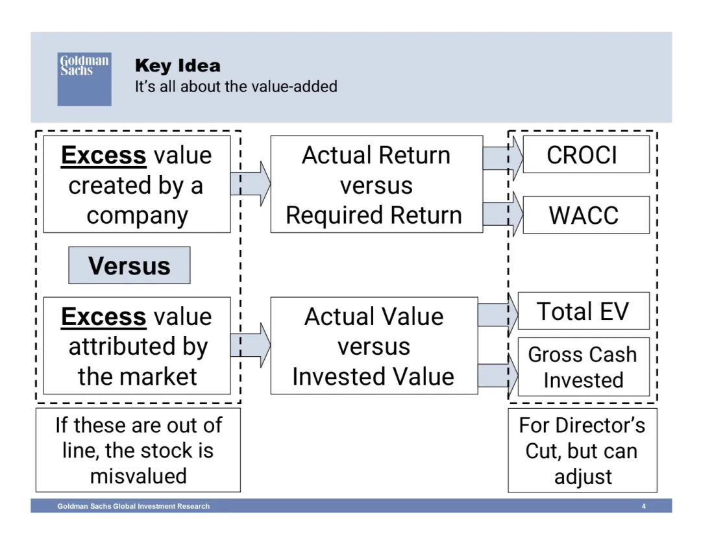
2. CROCI的有效性：案例
以1亿美元资产投资为例，必要回报为10%：
- 实际CROCI=10%：企业价值=1亿美元，价值中性；
- 实际CROCI=20%：企业价值=2亿美元，创造价值；
- 实际CROCI=5%：企业价值=5000万美元，毁损价值。
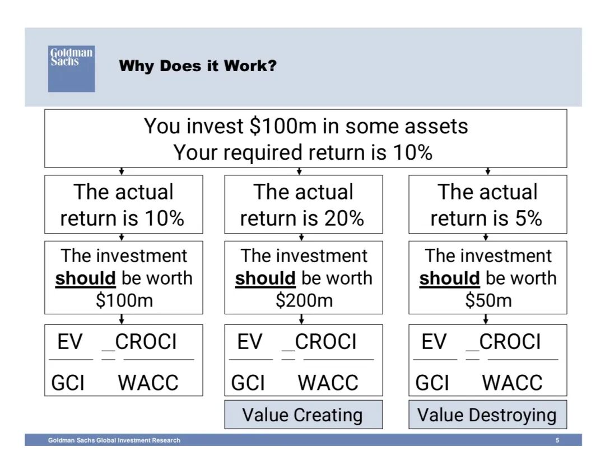
3. CROCI的精准计算
CROCI=DACF（债务调整后现金流） / GCI（总投入现金）
该公式的核心设计是剔除会计政策和财务结构的干扰，让跨企业/行业对比更有意义。
- 分子DACF：经营现金流 + 税后利息和租赁费用；非现金项目、企业财务结构（杠杆、租赁）对其无影响；
- 分母GCI：有形/无形资产的原值（未折旧、未减值）+ 经营性营运资本 + 资本化租赁 + 经营性投资；折旧政策、减值计提对其无影响。
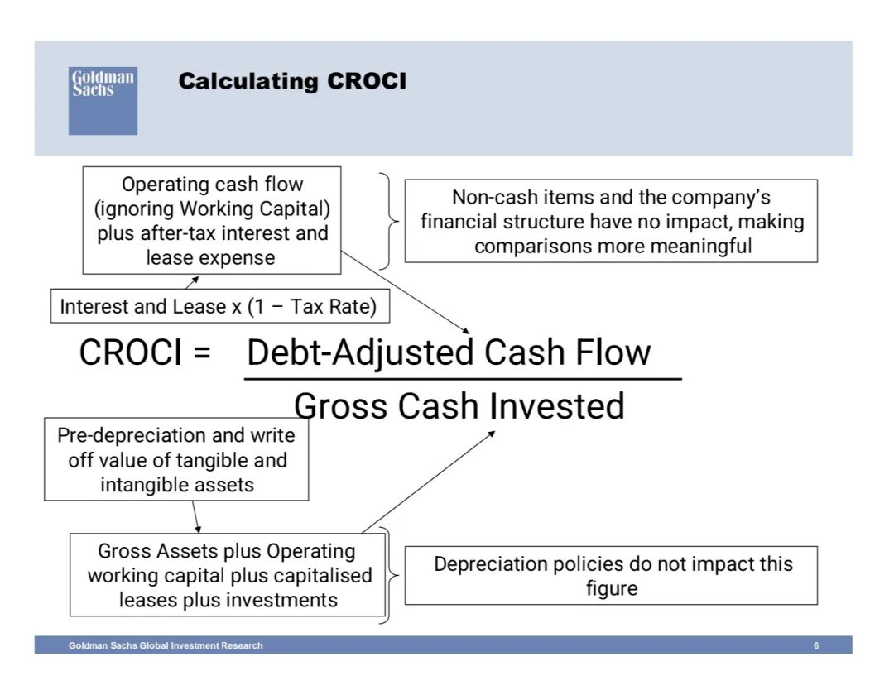
4. CROCI的实操应用：EV/GCI与CROCI/WACC象限分析
将企业按EV/GCI（纵轴）和CROCI/WACC（横轴）绘制成象限图，以1:1线为行业平均估值基准：
- 偏离1:1线则股票错估（高于为高估，低于为低估）；
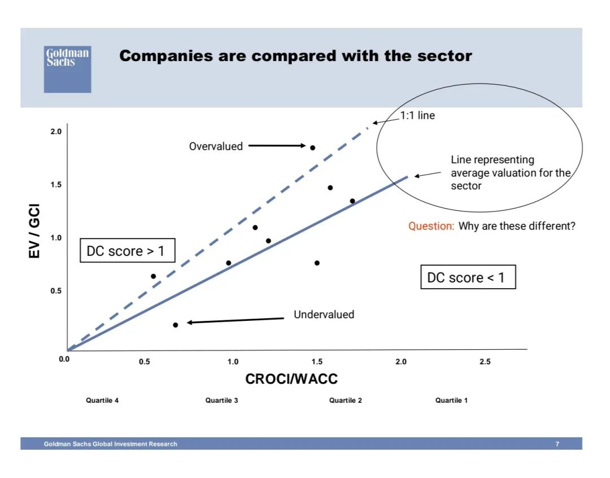
5. 增长的核心误区：绝对增长非价值驱动，收益回报才是
- 增长不一定创造价值：若管理层创造的回报<必要回报，增长会毁损价值；若回报>必要回报，增长才会创造价值；
- 回报的稳定性远高于增长：2000-2008年数据显示，企业的CROCI（现金回报）远比营收/利润增长更稳定、可预测；
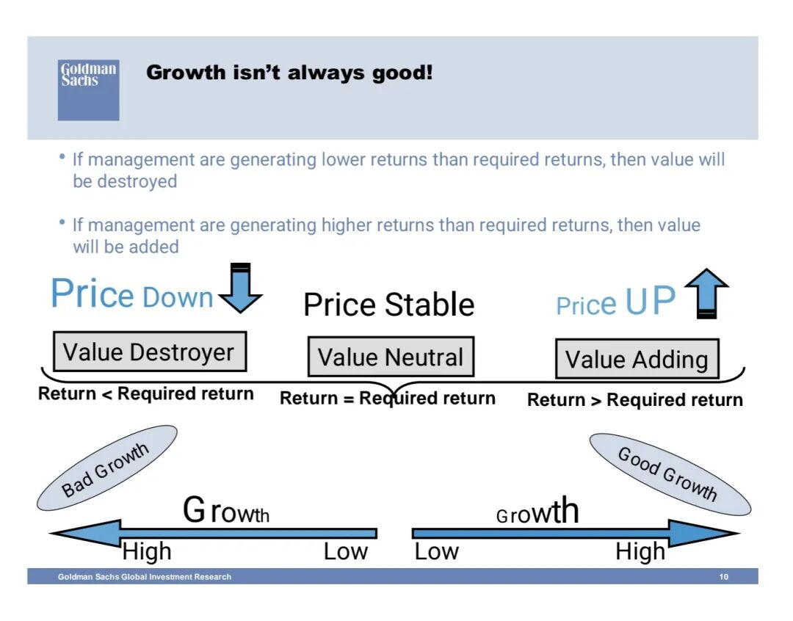
6. 分析框架延伸：CROCI四分位的持续性决定估值溢价/折价
将企业按CROCI分为Q1（顶级）、Q2、Q3、Q4（末位）四分位（从右向左），核心分析CROCI优势/劣势的持续时间对估值的影响：
- Q1（持续顶级CROCI）：4年以上的持续优势会获得显著估值溢价，3年及以下反而有约10%的估值折价；市场只为可持续的顶级回报支付溢价；
- Q4（持续末位CROCI）：企业估值存在“地板价”，4年以上的持续劣势在AEJ市场估值底为0.34X行业相对EV/GCI，日本市场为0.27X；因企业存在出售、分拆的资产价值，EV不会趋近于0；
- 非持续Q1企业：市场认为其优势不可持续，虽处于Q1但仍有10%的估值折价；非持续Q4企业：有20%的估值溢价，后续存在均值回归预期。
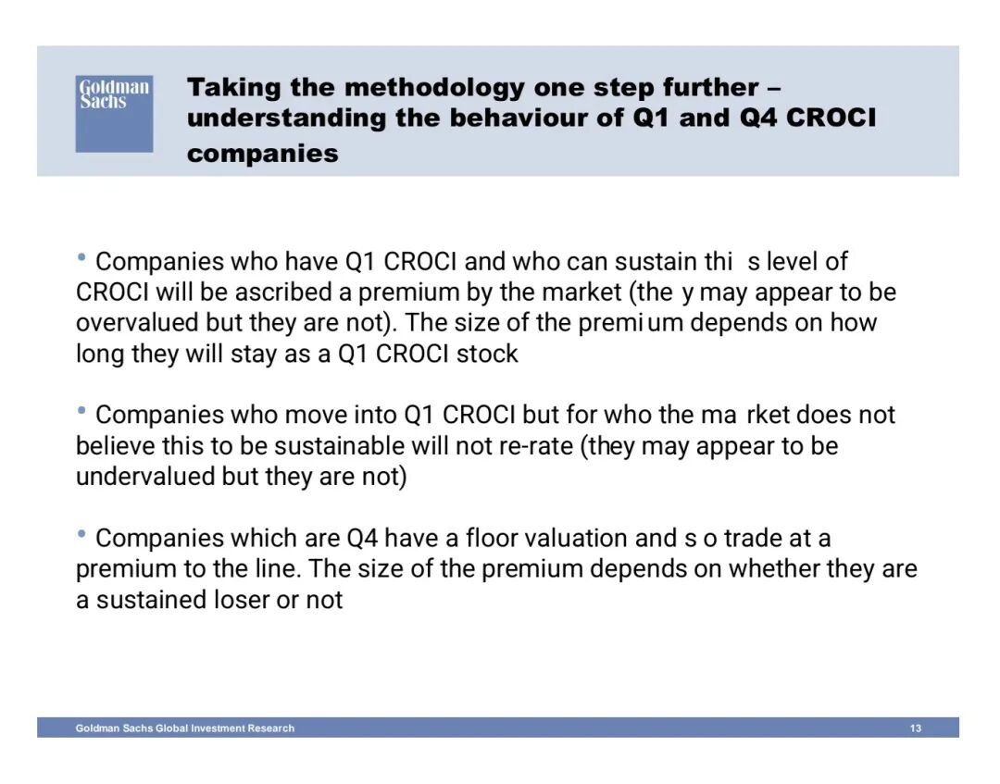
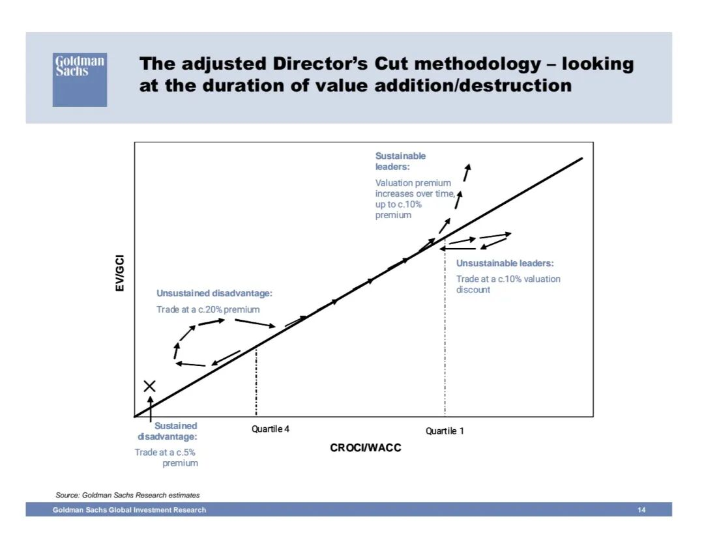
7. GS 高盛筛选体系：基于CROCI的企业筛选
核心考察两大维度，均以CROCI为核心基础：
- 资本回报：以CROCI四分位为核心衡量指标；
- 行业定位：结合行业研究团队分析企业的行业竞争地位；
8. CROCI的拆解：三大价值驱动因子
将CROCI拆解为可落地的企业经营指标，核心公式：
CROCI = （收入/GCI） ×（EBITDA/收入）×（DACF/EBITDA）
即CROCI=资产周转率 × 经营利润率 × 现金转换率；其中经营杠杆越高，EBITDA对收入变动的敏感度越高，CROCI的波动也越大。
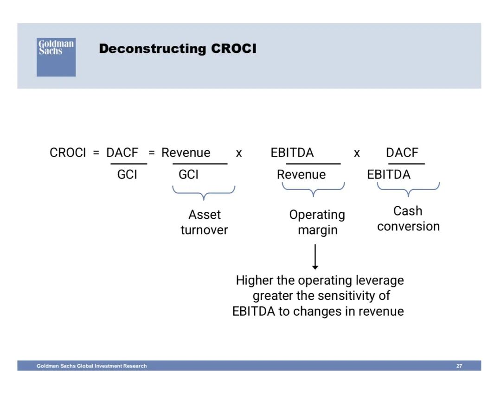
报告给出2009E的英国英镑计价案例，完整演示CROCI的计算、及如何通过CROCI推导目标股价，步骤如下：
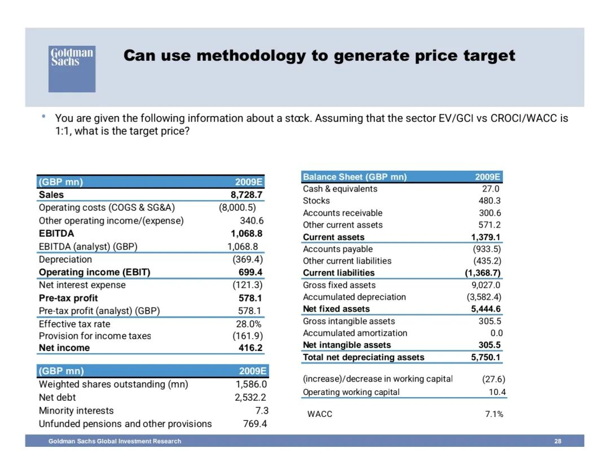
- 计算经营现金流=净利润+折旧-营运资本增加；
- 计算DACF=经营现金流+税后利息支出；
- 计算GCI=固定资产原值+无形资产原值+经营性营运资本；
-计算CROCI=DACF/GCI，及CROCI/WACC的比值；
-以行业1:1线为基准，计算EV=CROCI/WACC × GCI；
- 计算股权价值=EV-净债务-少数股东权益-未提存养老金及其他准备；
- 目标股价=股权价值/加权流通股数。
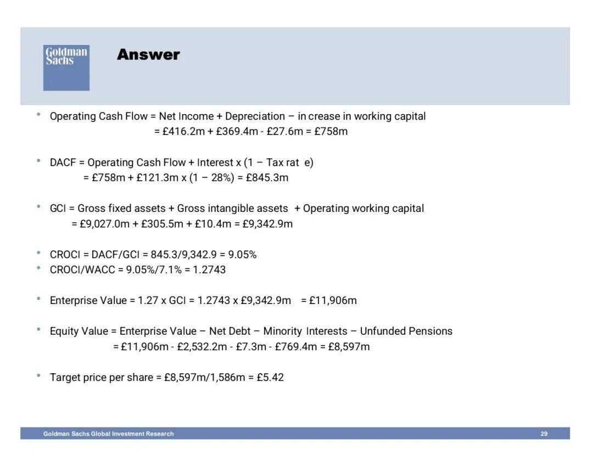
10. CROCI与ROIC的对比：核心差异在资产估值口径
二者均为资本回报指标，但存在本质区别：
- CROCI（现金基础）：分子DACF（未扣折旧、减值），分母GCI（资产原值，未折旧、未减值）；不受折旧政策、减值准备的影响；
- ROIC（会计基础）：分子NOPLAT=EBIT×(1-税率)（扣折旧、减值），分母IC（资产账面净值，已折旧、未减值）；减值准备会大幅扭曲ROIC；
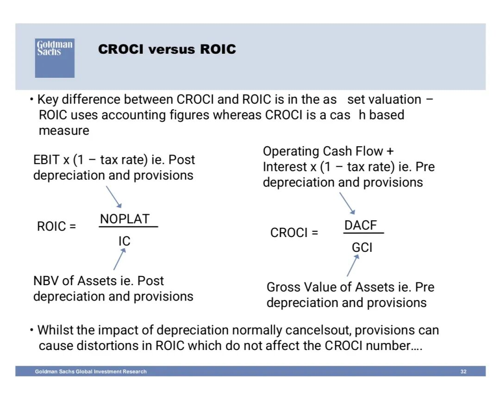
11. 基于收益框架的股票评级
结合EV/GCI和CROCI/WACC的象限，将股票分为四类评级：
- 可持续赢家（BUY）：持续Q1 CROCI，EV/GCI匹配CROCI/WACC；
- 均值回归赢家（BUY）：非持续Q1 CROCI，EV/GCI低于CROCI/WACC；
- 均值回归输家（SELL）：非持续Q4 CROCI，EV/GCI高于CROCI/WACC；
- 结构性输家（SELL）：持续Q4 CROCI，EV/GCI匹配CROCI/WACC。
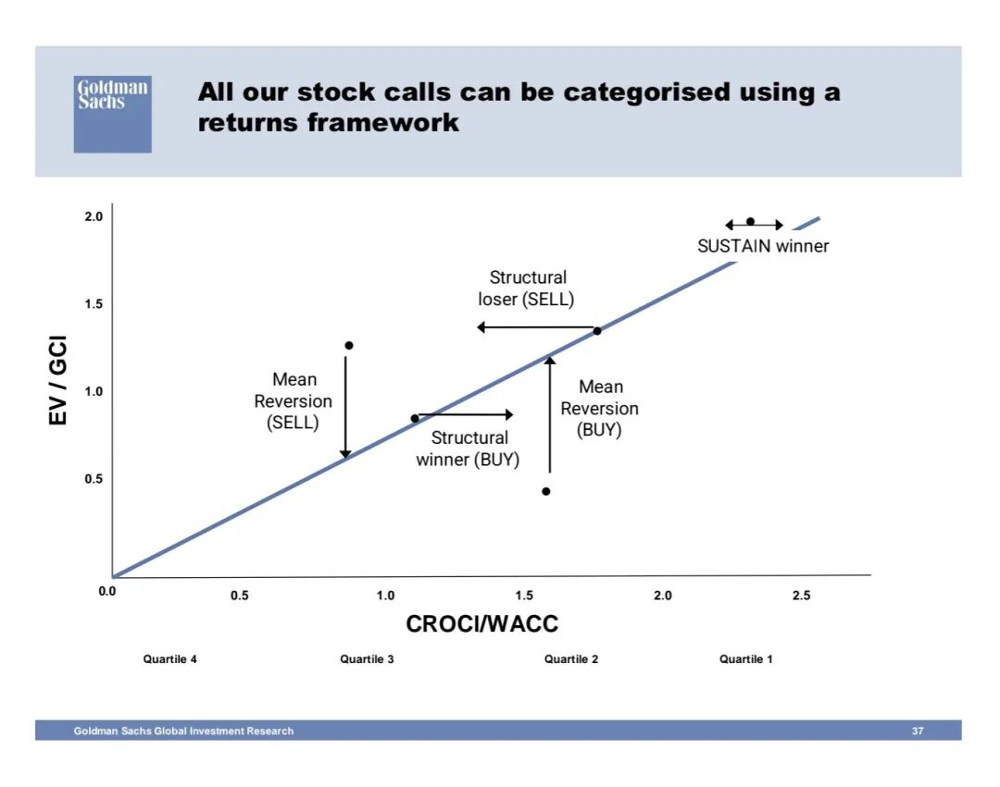